HKUST
The Hong Kong University of Science and Technology香港科技大學
Graduate畢業
About關於
Background, professional experience, education, and media & recognition. 背景、工作經歷、學歷，以及媒體報道和獎項。
01 — About關於
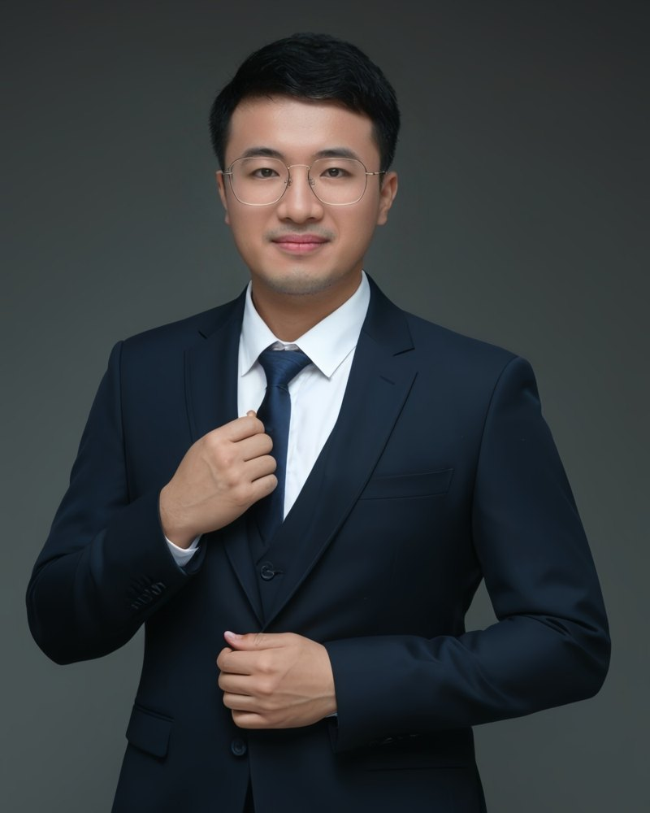
I work across capital markets and science-based ventures. On the markets side, I advise companies on accessing the US equity markets through IPO advisory and M&A. On the venture side, I co-founded Nanotech Innovation Limited while at university, where we develop nano-coatings and biomedical targeted technologies backed by patents.
我的工作橫跨資本市場與科研創業。在資本市場方面，我透過 IPO 顧問及併購業務， 協助企業進入美國股票市場；在創業方面，我於大學期間聯合創辦納米科研技術有限公司， 研發具專利的納米塗層及生物醫療標靶技術。
Having been on both sides — building a technology company and helping companies raise capital — I understand what founders need to explain to investors, and what investors need to see from founders.
同時經歷過「創辦科技公司」與「協助企業融資」兩個角色，令我明白創辦人需要向投資者說清楚甚麼， 也明白投資者希望從創辦人身上看到甚麼。
I was born and raised in Hong Kong. I started my first company at 20 with little more than a laptop, and by 22 the business had expanded to other countries. Outside work I volunteer, give talks to students, have helped organise cultural exchanges, have worked with NGOs on sustainability projects, and have spoken on international stages.
我在香港出生和長大。20 歲時創辦第一間公司，起步時差不多只有一部手提電腦；到 22 歲，業務已拓展至其他國家。工作以外，我參與義工服務、到學校為學生演講，曾協辦文化交流活動、與非政府組織合作推動可持續發展項目，也曾在國際舞台上演講。
02 — Experience經歷
富輝集團 · Fuway
Advising companies on the US equity markets, focusing on IPO advisory and M&A.為企業提供美國股票市場相關顧問服務，專注 IPO 上市及併購。
BTRDCC · Biochemical Technology Research & Development Consultation Centre — a project of Nanotech Innovation Limited納米科研技術有限公司旗下項目
AI-integrated biotechnology: patented technologies combining nano-targeting with research into cancer-therapy technologies.結合 AI 的生物科技：以專利技術結合納米標靶，研發癌症治療技術。
Nanotech Innovation Limited · 納米科研技術有限公司
Co-founded the company in 2021 while at university; it began as Master Masker Technology Company Limited. Leading operations for R&D in nano-coatings and biomedical targeted technologies, with patented technologies.2021 年於大學期間聯合創辦，前身為 Master Masker Technology Company Limited。負責公司營運，研發納米塗層及生物醫療標靶技術，並擁有相關專利。
Social Enterprise Research Academy · SERA
03 — Education學歷
HKUST
Graduate畢業
UQ
Master's studies碩士課程修讀
FUDAN
Admitted to MBA program獲 MBA 課程錄取
04 — Media & recognition媒體及認可
Video · YouTube影片 · YouTube
The video player loads only when you press play.按下播放後才會載入影片播放器。
Watch on YouTube在 YouTube 觀看 ↗Case feature案例專題
A case feature on the company I co-founded at university.介紹我於大學期間聯合創辦的公司。
Read the case閱讀案例 ↗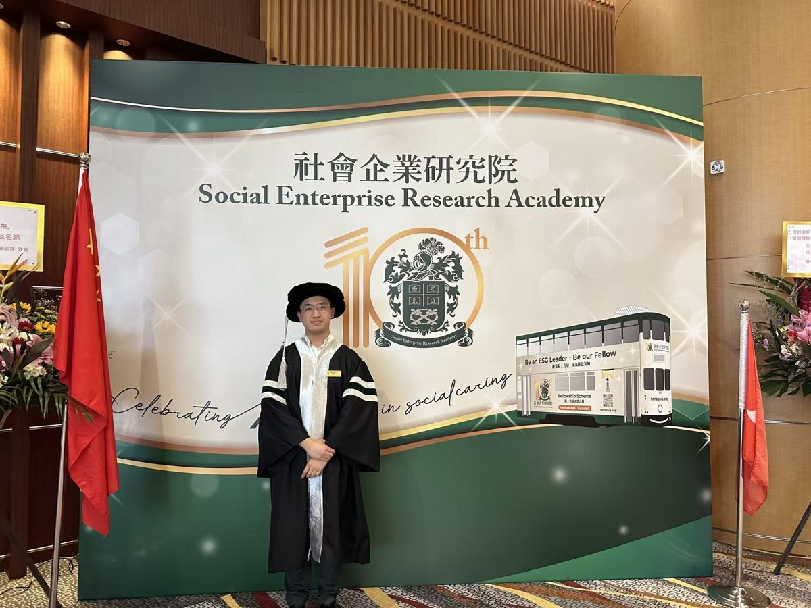
Recognition認可
At the Social Enterprise Research Academy's 10th-anniversary event.攝於社會企業研究院十周年活動。
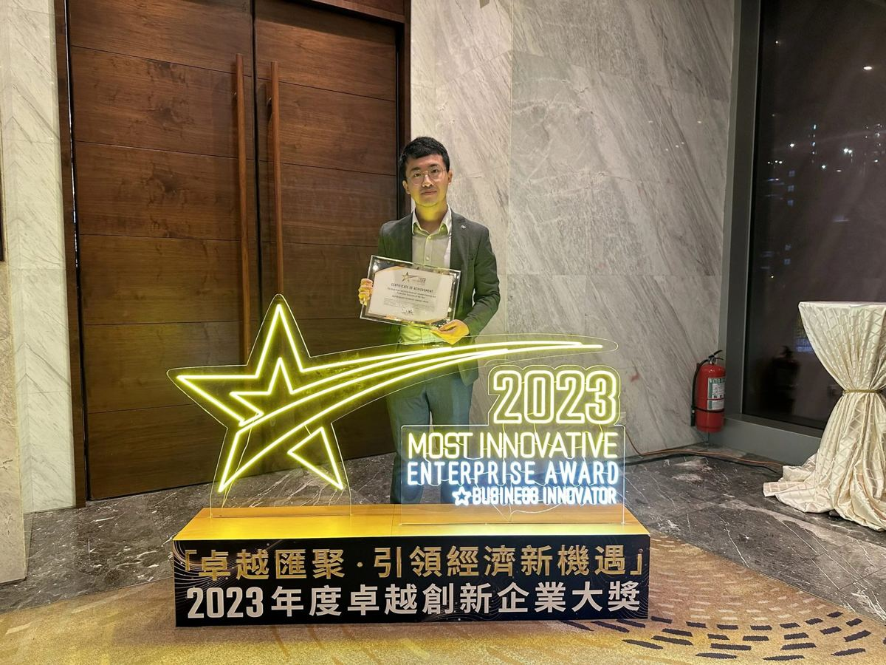
Award · 2023獎項 · 2023
Awarded to Master Masker Technology Company Limited (now Nanotech Innovation Limited) at Business Innovator's 2023 Most Innovative Enterprise Awards.Master Masker Technology Company Limited（現為納米科研技術有限公司）於商業創意多媒體平台 BUSINESS INNOVATOR 主辦的《2023 年度卓越創新企業大獎》中獲頒此獎。
Along the way一路走來
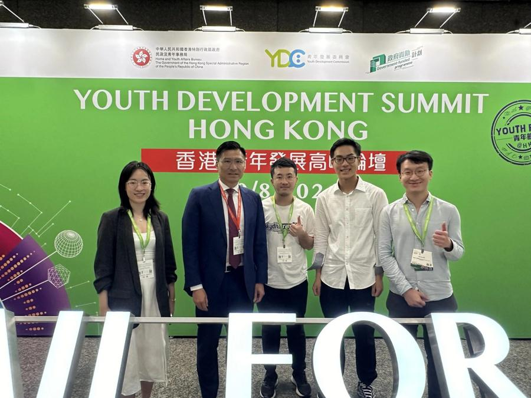
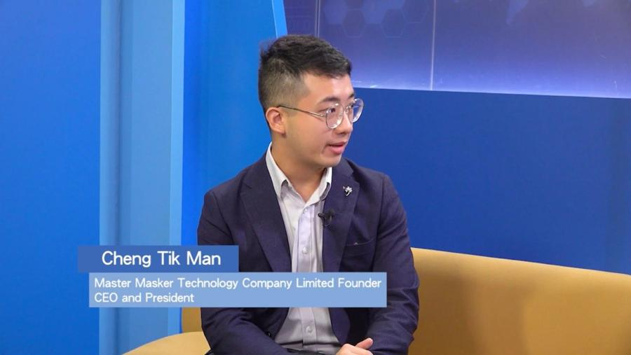
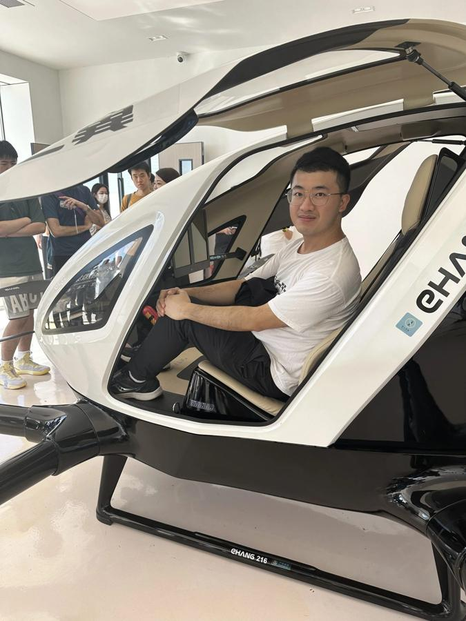
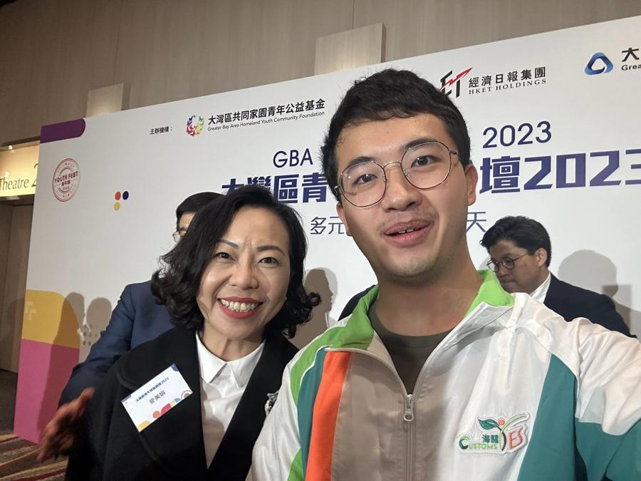
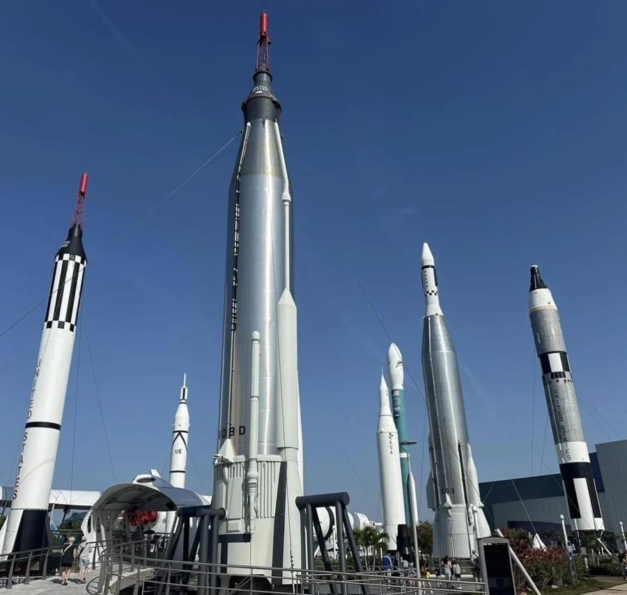
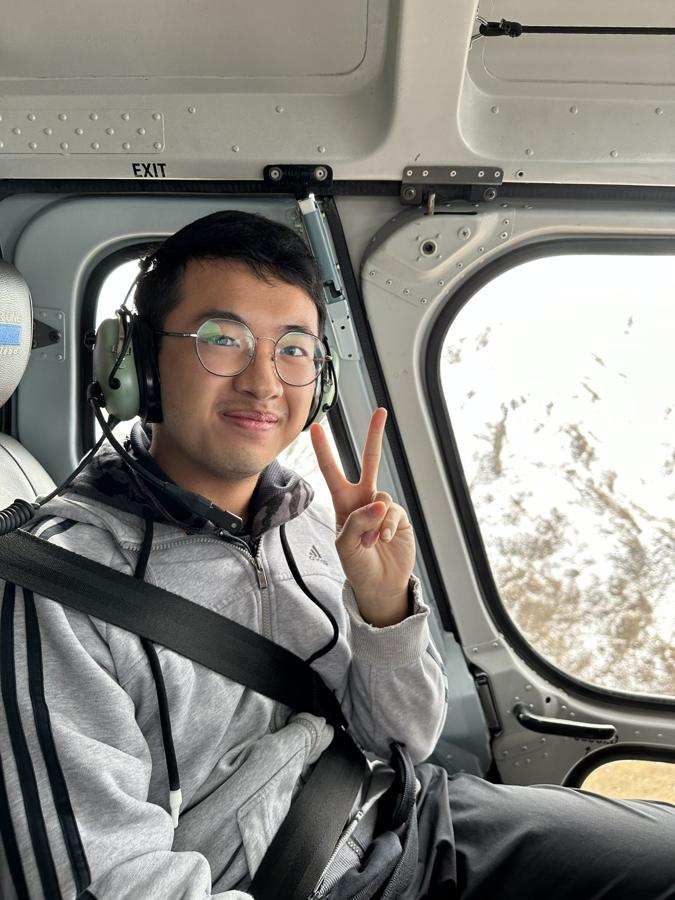
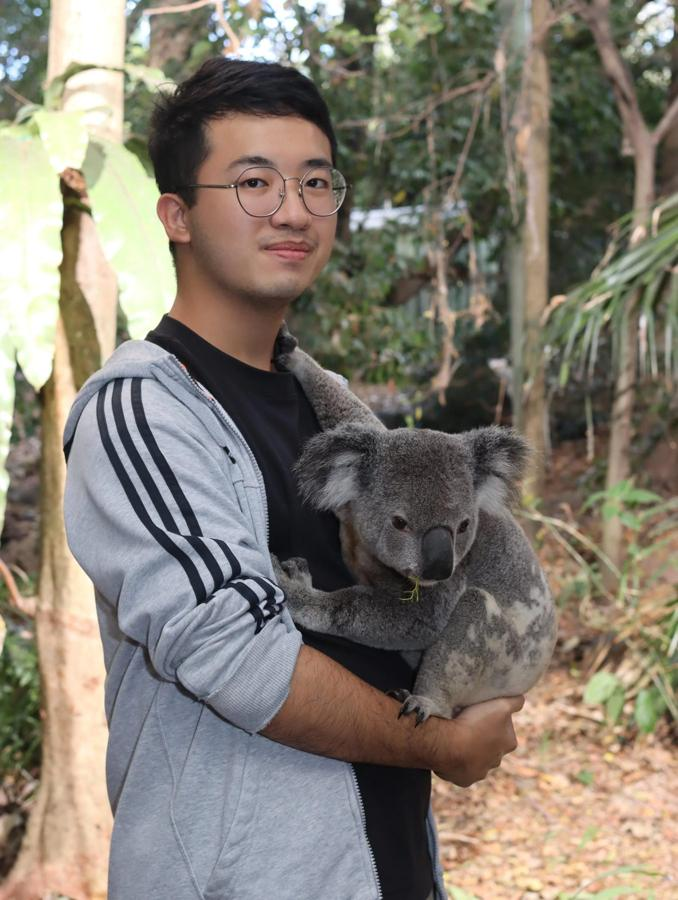
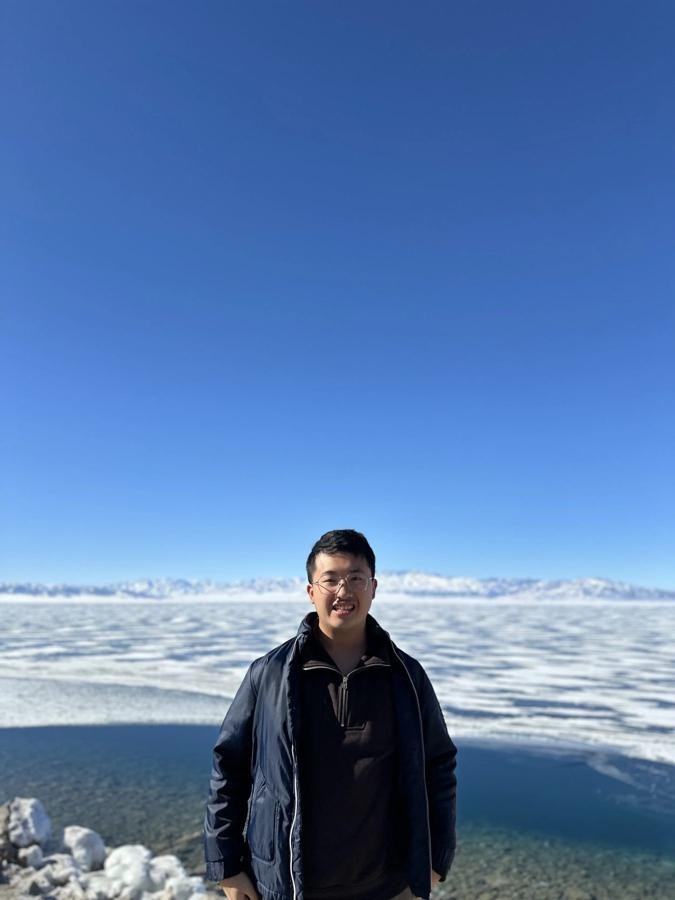
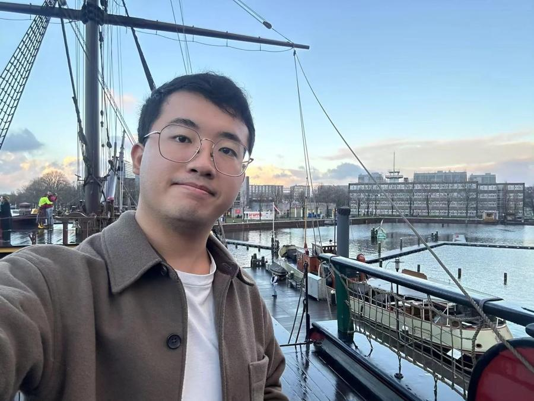
I'd be glad to hear from you.歡迎與我聯絡。